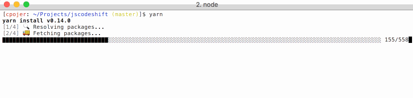

在 JavaScript 社区中，工程师们互相分享成千上万的代码，帮助我们节省大量编写基础组 件、类库或框架的时间。每个代码包可能都依赖于其他代码，而代码间的依赖关系则由包管理器 负责维护。目前最流行的 JavaScript 包管理器是 npm 客户端，在 npm 仓库中提供了多达 30 万的软件包。据统计，已有超过 500 万的工程师使用 npm 仓库，其软件包下载量达到了 50 亿 次/月。在 Facebook 中，我们多年来一直在使用 npm 客户端并取得了成功，但随着代码仓库 与团队人数的增长，我们在一致性、安全性以及性能方面遇到了挑战。在尝试解决每个方面的 问题后，我们最终决定着手打造一套新的客户端解决方案，以帮助我们更可靠地管理依赖。我 们把这个客户端工具称为 Yarn —— 更加快速、可靠、安全的 npm 客户端的替代品。我们在此 荣幸地宣布，我们与 Exponent、 Google 和 Tilde 进行了合作，并开源 Yarn 项目。工程师 在使用 Yarn 时，依然可以访问 npm 仓库，但 Yarn 能够更快速地安装软件包和管理依赖关系， 并且可以在跨机器或者无网络的安全环境中保持代码的一致性。Yarn 提高了开发效率，并解决 了共享代码时面临的一些问题，使得工程师们可以专注在构建新产品以及新特性上。JavaScript 包管理方式在 Facebook 的演变在包管理工具出现之前，JavaScript 工程师们通常依赖的项 目并不多，因此会把依赖直接存储在工程目录或上传到 CDN 上。在 Node.js 出现后不久，第 一个主流的 JavaScript 包管理工具 npm 被引入进来，并很快成为了最受欢迎的包管理工具之 一。从此，新的开源项目不断涌现，工程师们比起以前更加乐于分享代码了。在 Facebook 中， 我们有很多项目都要依赖 npm 仓库上的代码，比如 React。但随着内部规模的扩大，我们面临 着以下挑战：在跨平台与跨用户之间安装依赖时的代码一致性问题、在安装依赖时花费太长时 间、以及 npm 客户端自动执行某些依赖库的代码所导致的安全性问题。我们尝试过寻找这些问 题的解决方案，但在这个过程中通常又会引起一些新的问题。
我们已经在 Facebook 中把 Yarn 用于生产环境,并且效果非常理想。Yarn有效地管理了许 多JavaScript 项目的包依赖关系。在每次迁移时，构建都可以离线进行，因此加速了工作流程。 我们基于 React Native 在不同条件下进行安装时间测试，比较了 Yarn 与 npm 的性能
Android 性能优化典范（六）：启动时间与安装包大小本文涉及的内容主要有程序启动时
间性能优化的三个方面。还介绍了减少安装包大小的 checklist 以及如何使用 VectorDrawable
来减少安装包的大小。Android 增量更新完全解析 是增量不是热修复相信大家都见过在应用市
场省流量更新软件，一个几百 M 的软件可能只需要下载一个 20M 的增量包就能完成更新。那么
它是如何做的呢？Android 系统篇之—-编写简单的驱动程序并且将其编译到内核源码中本文介
绍一下如何通过编译 Android 源码来手动添加一个系统服务，让编译之后的 Android 系统中
存在我们的这个服务，每个应用都可以调用。Android 三种播放视频的方式在 Android 中，
有三种方式来实现视频的播放，本文将为大家详解。
iOS 中对 HTTPS 证书链的验证本文笔者整理了 HTTPS 简要原理；数字证书的内容、生成及验
证；iOS 上对证书链的验证了三部分内容。Thinking in Swift：重新审视装饰器模式现代的
Swift 中，有一些语法特性是曾经的语言所不具备的，比如 protocol extension，高阶函数
等。本文将利用 Swift 的语法来谈下装饰器模式在 Swift 下的解决思路。Swift 3 必看：
从使用场景了解 GCD 新 APISwift 3 中对 C 层级的 GCD 的 API 进行了彻头彻尾的改变，
本文作者@没故事的卓同学 从实际使用场景来分享一下新的 API 使用。
iOS 10 SiriKit QQ 适配详解苹果在 iOS 10 开放了 SiriKit 接口给第三方应用。那么第三
方应用使用 Siri 的体验究竟如何？哪些应用可以接入 SiriKit？接入 SiriKit 又需要做哪些
工作呢？这篇文章会为你一一解答这些疑惑。
iOS 5 分钟集成热修复(JSPatch)在 iOS 中有很多种热修复方案，本文使用的热修复方案是
JSPatch。JSPatch 有非侵入式、上手快、相关服务成熟的优点。从 Instagram 开源 IGListKit
聊聊 iOS 开发趋势IGListKit 是一个很典型的使用 Objective-C 开发的，但却是个偏向使用
Swift 语言开发者的一个 UI 组件库。
VR
Unity 与 Cardboard App 基础实践本文借助一些免费的 Unity 资源，搭起 3D 场景，使用
Google 提供的 SDK 组件模拟 VR 视野，当视线聚焦在 3D 对象上时，VR 准星会发生形变，
同时 3D 对象会改变外观，暗示互动性；而通过鼠标模拟 Cardboard 按钮点击事件还可以使
3D 对象产生位移。